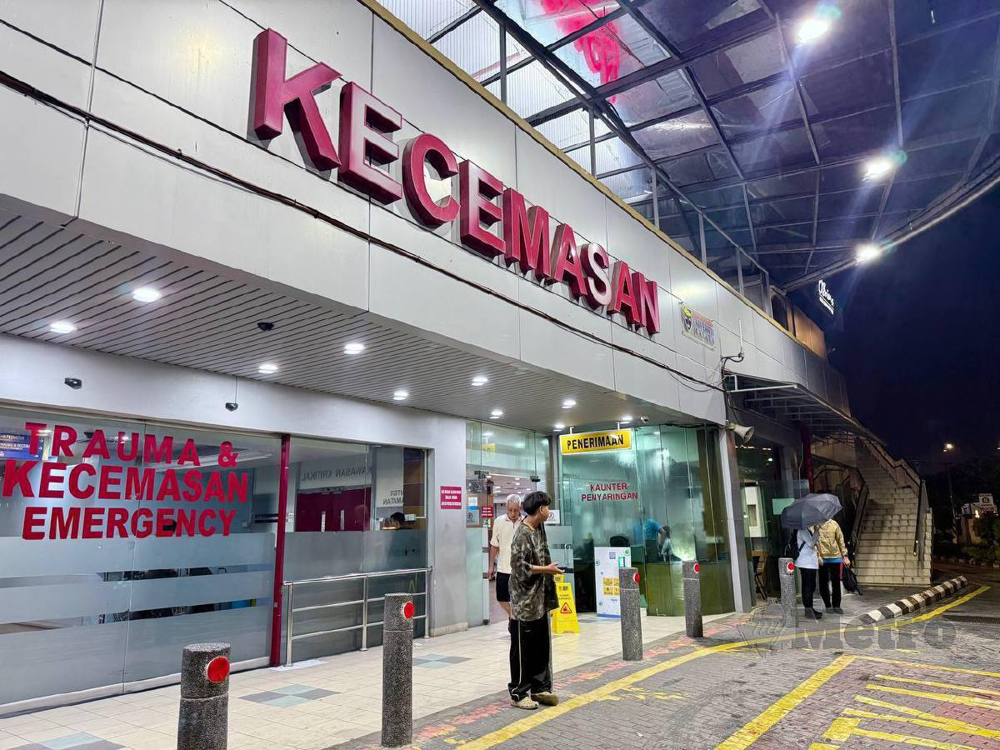

ED-CARD
Emergency Department Pre-Consultation and Risk Detection System

Tech Stack
Overview
ED-CARD (Emergency Department Pre-Consultation and Risk Detection) is a web-based healthcare system designed to streamline patient intake and enhance early risk identification in emergency departments. Developed in collaboration with the University Malaya Medical Centre (UMMC), the system focuses on improving pre-consultation workflows in the green zone by collecting patient complaints and medical history, generating structured clinical summaries, and assisting healthcare providers with faster, more informed decision-making through AI-supported tools.
Problem
Emergency departments often face high patient volumes, especially in non-critical (green zone) cases, leading to inefficiencies in triage and consultation. Key challenges include:
- Incomplete or unstructured patient information during initial intake
- Time-consuming manual documentation by healthcare staff
- Risk of missing critical “red-flag” symptoms during early assessment
- Lack of standardized summaries for quick clinical understanding
- Increased workload and cognitive burden on medical personnel
These issues can delay treatment, reduce accuracy in early risk detection, and impact overall patient care quality.
Solution
ED-CARD addresses these challenges by providing an intelligent pre-consultation system that digitizes and structures patient input before doctor interaction. The platform leverages Large Language Models (LLMs) combined with rule-based clinical logic to:
- Collect and standardize patient-reported symptoms and history
- Generate concise, structured clinical summaries for doctors
- Detect potential high-risk conditions through predefined red-flag rules
- Support decision-making with AI reasoning grounded in clinical practice guidelines
This hybrid approach ensures both efficiency and reliability, enhancing workflow while maintaining clinical safety.
Key Features
-
AI-Assisted Clinical Summarization
Automatically converts patient inputs into structured, easy-to-read medical summaries
-
Red-Flag Detection System
Rule-based logic combined with AI reasoning to identify potentially serious conditions early
-
Interactive Symptom Input Interface
User-friendly front-end with SVG-based body region mapping for precise symptom reporting
-
Retrieval-Augmented Generation (RAG)
Integrates medical Clinical Practice Guidelines (CPGs) to ensure accurate and grounded AI responses
-
Structured Clinical Data Handling
Organizes patient data into standardized formats for better readability and downstream use
-
Web-Based Architecture
Built with React and integrated with SQL databases for scalable and responsive performance
Project Gallery